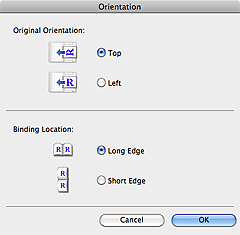

Input Settings allows you to set the following items:
-
Select Source
The type of document to be scanned is displayed. To scan from the Platen, select Platen. To scan from the ADF (Auto Document Feeder), select Document (ADF Simplex) or Document (ADF Duplex).
 Important
Important-
Some applications do not support continuous scanning from the ADF. For details, refer to the application's manual.
-
-
Paper Size
Select the size of the document to be scanned. This setting is available in whole image view only.
When scanning both sides of the documents automatically from the ADF, select A4 or Letter.
When you select a size, the Preview area size changes accordingly.
Important-
Some applications have a limit to the amount of scan data they can receive. ScanGear (scanner driver) can scan data that is of:
- 21000 pixels x 30000 pixels or less
-
If you change Paper Size after previewing, the preview image will be deleted.
 Note
Note-
If you are not sure which size you should select for Paper Size, set Paper Size to Full Platen, then measure the size of the document and enter the values into
 (Width) and (Height).
(Width) and (Height).
-
-
Original Orientation
Set the orientation and stapling side of the documents to scan from the ADF.
Click Settings... to open the Orientation dialog.
Important-
The Orientation dialog can only be opened when Select Source is Document (ADF Simplex) or Document (ADF Duplex).
-
Binding Location cannot be specified when Select Source is Document (ADF Simplex).
-
-
Color Mode
Select how to scan the document.
-
Color
Select this mode to scan color documents or to create color images. This mode renders the image in 256 levels (8 bit) of R(ed), G(reen), and B(lue).
-
Grayscale
Select this mode to scan black and white photos, or to create black and white images. This mode renders the image in 256 levels (8 bit) of black and white.
-
Black and White
Select this mode to scan photos and documents in black and white. This mode renders the image in black and white. The contrast in the image is divided at certain levels (threshold level) into black and white and is rendered in two colors. The threshold level can be set with (Threshold).
-
-
Input Size
In thumbnail view, the cropped document size is displayed after preview.
In whole image view, the Paper Size is displayed before preview, and the cropping frame (scan area) size is displayed after preview.
You can adjust the cropping frame size by entering the values into
(Width) and (Height).Click (Change Aspect Ratio) and change it to (Keep Aspect Ratio) to maintain the aspect ratio when you specify the cropping frame size.
Important-
Input size settings are available only when Output Size in Output Settings is Flexible. If you select a size other than Flexible, a cropping frame calculated from Output Size and Output Resolution is displayed, and its aspect ratio is fixed.
Note-
The values you can enter will be within the range of the selected document size. The minimum size is 96 pixels x 96 pixels when Output Resolution is 600 dpi, scaled at 100%.
-
When Auto Crop is performed in whole image view, the aspect ratio will not be maintained since the size will be prioritized.
-
See "Adjusting Cropping Frames" for details on cropping frames.
-